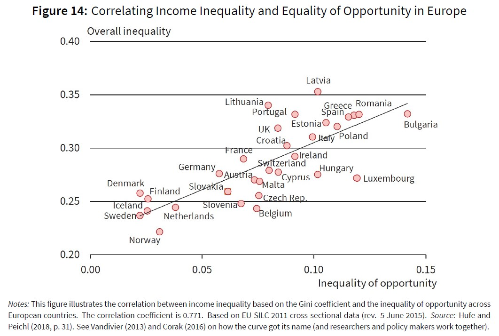

The Great Gatsby and Equality of Opportunity
Besides taking the ICT, Inequality and Labour course at the moment, I am also required to take the course “Public Economics”. It deals with the role of government in the economy and whether the government should intervene or not. One common theme in both courses is the debate about inequality. With this post, I would like to talk explicitly about (in)equality of opportunity.
Equality of opportunity deals with the issue that a lot of current inequality in for example income or wealth is caused by factors beyond the control of the individual. Most intuitive examples for such factors are family and social background, ethnicity and also gender. We already read in some papers throughout our course that an inequality of opportunity seems to exist. People born within a poor environment indeed tend to stay poor, which then leads to even higher disparity in income inequality. A crucial part to enable upward mobility is the education system, and many argue that – at least in the U.S. – the public education system seems to fail to fill the gaps between children from different backgrounds.
In Public Economics, we discussed that intergenerational mobility also strongly depends on geographical factors. In Figure 13 below, you can see that certain commuting zones do not allow for any upward mobility, while others have quite optimistic forecasts for the income of the children. This illustrates the important role of the neighbourhood regarding equality of opportunity.
Another figure discussed in Public Economics course was the “Great Gatsby Curve”, which plots the overall inequality of a country against the country’s inequality of opportunity. Figure 14 depicts the correlation between those two measures. Before I kind of implied that inequality of opportunity could cause overall inequality to become even larger but bear in mind hear that this figure only depicts the correlation. The causal relationship between those two cannot that easily be identified.

Concluding, I would like to refer to Levy and Murnane (2013), who emphasise that changes in the education system need to be made, in order to fix the skill disparity among children. By given children from poorer background the opportunity to successfully obtain the skills needed, they can leave the vicious cycle of poverty, which will ultimately also lower overall inequality.
Photo from: Unsplash
Source: Public Economics Lecture Slides